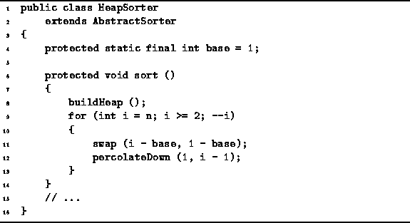

Data Structures and Algorithms
with Object-Oriented Design Patterns in Java
Data Structures and Algorithms
with Object-Oriented Design Patterns in Java
Once the max heap has been built,
heapsort proceeds to the selection sorting phase.
In this phase the sorted sequence is obtained
by repeatedly withdrawing the largest element from the max heap.
Figure  illustrates how this is done.
illustrates how this is done.
The largest element of the heap is always found at the root and the root of a complete tree is always in array position one. Suppose the heap occupies array positions 1 through k. When an element is withdrawn from the heap, its length decreases by one. That is, after the withdrawal the heap occupies array positions 1 through k-1. Thus, array position k is no longer required by the max heap. However, the next element of the sorted sequence belongs in position k!
So, the sorting phase of heapsort works like this: We repeatedly swap the largest element in the heap (always in position 1) into the next position of the sorted sequence. After each such swap, there is a new value at the root of the heap and this new value is pushed down into the correct position in the heap using the percolateDown method.
Program gives the sort method
of the HeapSorter class.
The sort method embodies both phases of the heapsort algorithm.
In the first phase of heapsort
the buildHeap method is called to transform
the array into a max heap.
As discussed above, this is done in O(n) time.

Program: HeapSorter class sort method.
The second phase of the heapsort algorithm builds the sorted list.
In all n-1 iterations of the loop on lines 9-13 are required.
Each iteration involves one swap
followed by a percolateDown operation.
Since the worst-case running time for percolateDown is  ,
the total running time of the loop is
,
the total running time of the loop is  .
The running time of the second phase asymptotically dominates
that of the first phase.
As a result, the worst-case running time of heapsort is
.
The running time of the second phase asymptotically dominates
that of the first phase.
As a result, the worst-case running time of heapsort is  .
.
 Copyright © 1998 by Bruno R. Preiss, P.Eng. All rights reserved.
Copyright © 1998 by Bruno R. Preiss, P.Eng. All rights reserved.